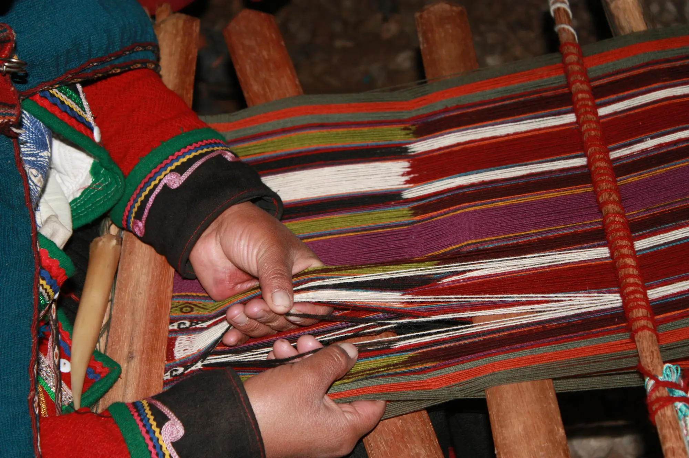
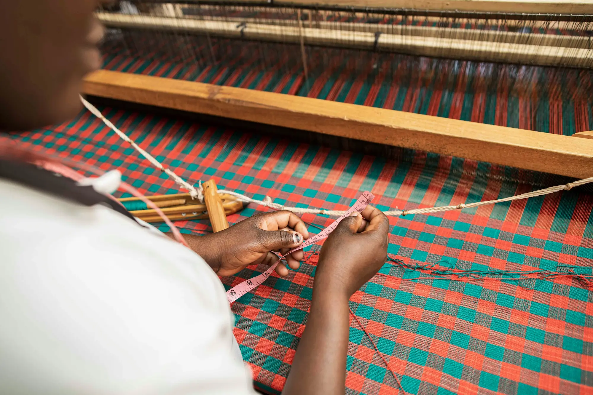
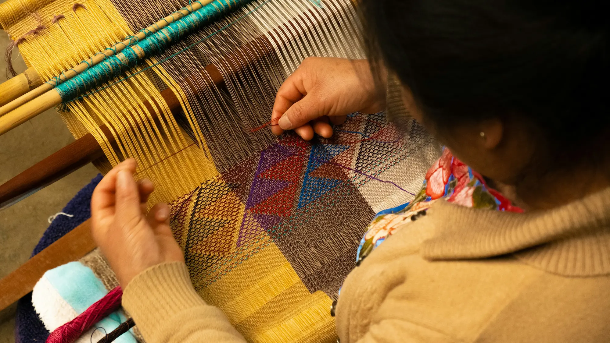

Tradición
15 Marzo, 2026
El arte del tejido Wayúu: Más que hilos
Descubre el significado oculto detrás de los patrones geométricos en nuestras mochilas...
Leer más →
TradiciónDescubre el significado oculto detrás de los patrones geométricos en nuestras mochilas...
Leer más →
SostenibilidadPor qué elegimos fibras naturales y tintes orgánicos para nuestras piezas únicas...
Leer más →
Detrás de cámarasTe invitamos a conocer el proceso creativo desde que nace la idea hasta la pieza final...
Leer más →